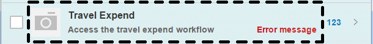
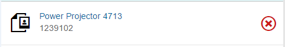

sap.m.CustomListItem control to create your own
layout if the other list items available in OpenUI5 do not fit your
needs.OpenUI5 contains several
list items that are used with the sap.m.List control to serve
different standard scenarios. These are outlined in the table below, along with
sap.m.ColumnListItem, which is used together with the
sap.m.Table control:
|
List Item |
Used for... |
|---|---|
|
|
Displaying list content with a title description, icon and info |
|
|
Displaying name/value pairs |
|
|
Building a form-like user interface on phones |
|
|
Triggering an action directly from a list |
|
|
Displaying a standard UI for feeds. For more information, see Feed List Item |
|
|
Providing a quick overview for an object within a list |
|
|
Providing responsive table design in combination with
|
|
|
Creating custom list items if none of the list items above are suitable |
If none of the predefined list items (the first seven entries in the table above) fit
your scenario, you can also create your own layout by using
sap.m.CustomListItem directly, or create a new control that
inherits from sap.m.CustomListItem.
For more information about the different list items, refer to the corresponding API documentation.
A list item can be split into three parts, as shown in the following graphic:

The parts that are to the left and right of the dotted area are part of the
ListItemBase and are used to display the selection and deletion
mode, as well as different list item type indicators such as navigation, details,
and counter. The Unread indicator also comes from the
ListItemBase and when it is set, any unread text will be
displayed in bold format.
The dotted area is the area in which the content of a list item is placed. If you are
using sap.m.CustomListItem, all of the content
will be placed there. The section below explains how to use
sap.m.CustomListItem in more detail.
sap.m.CustomListItem ControlAs mentioned above, you can either use sap.m.CustomListItem directly
by adding any content via content aggregation, or you can create your own control
that inherits from sap.m.CustomListItem if you need a more
sophisticated list item featuring your own properties, styling, and complex layout.
Below is an example showing how you can use the
sap.m.CustomListItem together with sap.m
controls.
<List headerText="Custom Content" mode="Delete" items="{path: '/ProductCollection'}" >
<CustomListItem>
<HBox>
<core:Icon size="2rem" src="sap-icon://attachment-photo" class="sapUiSmallMarginBegin sapUiSmallMarginTopBottom" />
<VBox class="sapUiSmallMarginBegin sapUiSmallMarginTopBottom" >
<Link text="{Name}" target="{ProductPicUrl}" press="handlePress"/>
<Label text="{ProductId}"/>
</VBox>
</HBox>
</CustomListItem>
</List>The example above creates an attachment list item that displays an attachment title
as a link, as shown in the graphic below. Clicking on the link will open the
attachment. Below the attachment title, we want to display the details of the
attachment, so we have used sap.m.HBox and
sap.m.VBox for basic layouting. Data binding is also supported,
and here it assumes that a model featuring ProductPicUrl and
ProductId properties is used.

The following example shows how to use a notepad control as a reusable control in an
sap.m.CustomListItem. It assumes you want to build a product
list item that shows an image of the product and displays its details:
sap.ui.define(["sap/ui/core/Control", "sap/m/Image"], function (Control, Image) {
var MyListItemContent = Control.extend("my.control.ListItemContent", {
metadata: {
properties : {
"name": {type: "string", defaultValue: ""},
"description": {type: "string", defaultValue: ""},
"price": {type: "string", defaultValue: ""},
"currency": {type: "string", defaultValue: ""},
"image": {type: "string", defaultValue: ""}
},
events: {
"myTap": {},
},
},
init: function(){
this._image = new Image({src:"<myImageSrc>"}).addStyleClass("myImageCSS").setParent(this);
},
renderer: {
apiVersion: 2, // see 'Renderer Methods' for an explanation of this flag
render: function(oRm, oControl) {
oRm.openStart("div", oControl);
oRm.class("listItemCSS");
oRm.openEnd();
oRm.renderControl(oControl._image);
oRm.openStart("div").class("descCSS").openEnd();
oRm.text(oControl.getDescription());
oRm.close("div");
oRm.openStart("div").class("priceCSS").openEnd();
oRm.text(oControl.getPrice());
oRm.close("div");
oRm.openStart("div").class("curCSS").openEnd();
oRm.text(oControl.getCurrency());
oRm.close("div");
oRm.openStart("div").class("nameCSS").openEnd();
oRm.text(oControl.getName());
oRm.close("div");
oRm.close("div");
}
}
});
//example how to react on browser events and convert them to control events
ListItemContent.prototype.ontap = function(){
//your own tap logic
this.fireMyTap({});
};
return ListItemContent;
});After we've created this notepad control above, we consume it in the
sap.m.CustomListItem as a content aggregation, as shown
here:
// "CustomListItem" required from "sap/m/CustomListItem"
var oCustomListItem = new CustomListItem({content: [new MyListItemContent({
//usual control setup
})]});